imajin · figure system
Every figure type imajin currently produces, rendered at default styling on synthetic data — a reference for the plotting tools' look, colour palette and options.
Control is a de-emphasised slate grey (#636867); conditions get colour. Colorblind-safe (min ΔE ≥ 15.2). Noto Sans (default) / Noto Serif. Axis, tick and legend labels are auto-formatted to scientific typography (Mean Intensity, µm², (A.U.)).
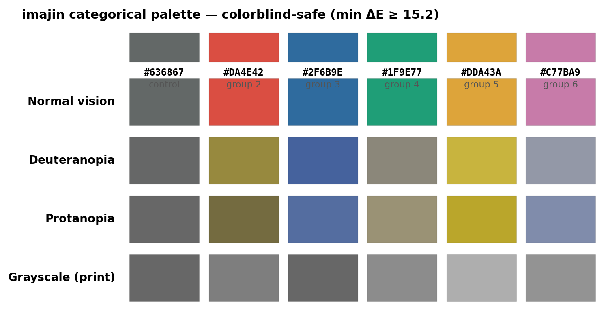
6-colour · colorblind-safeVerified under normal / deuteranopia / protanopia / grayscale
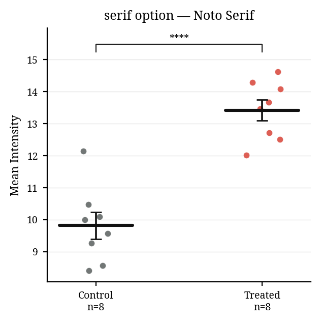
font="serif"Noto Serif option (default is Noto Sans)
Chart kind, paired lines, post-hoc brackets and the condition matrix are all options of one tool.
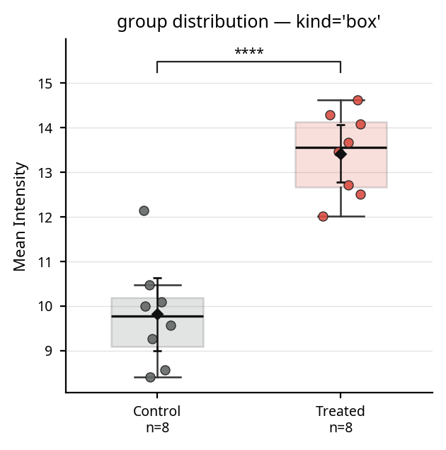
kind="box"Box + points + mean ± 95% CI — default
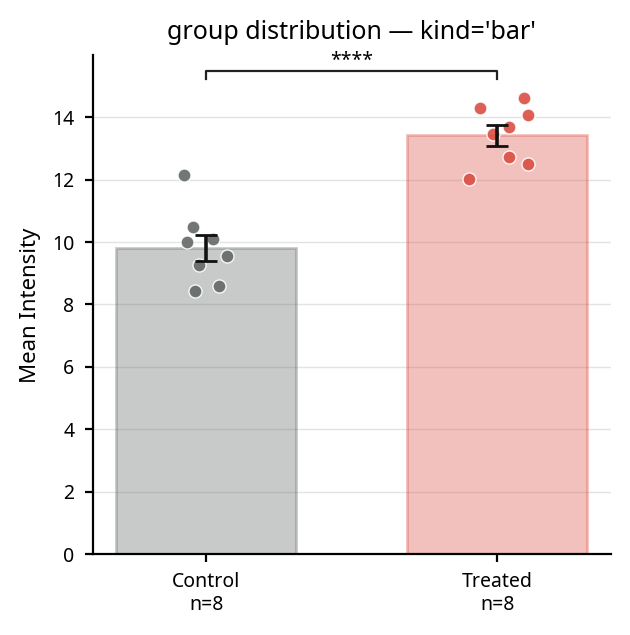
kind="bar"Mean + SEM bars + points
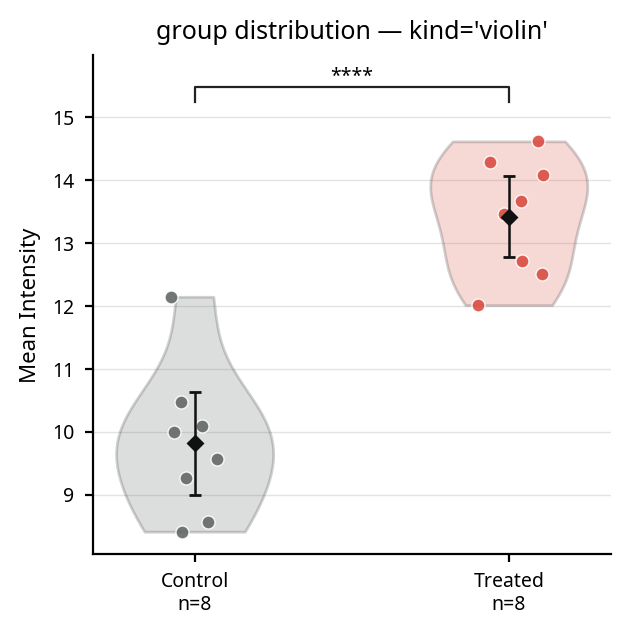
kind="violin"Density + points
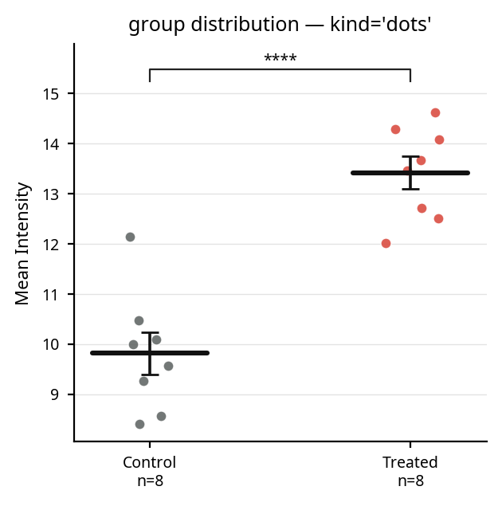
kind="dots"All points + mean ± SEM crossbar — best for small n
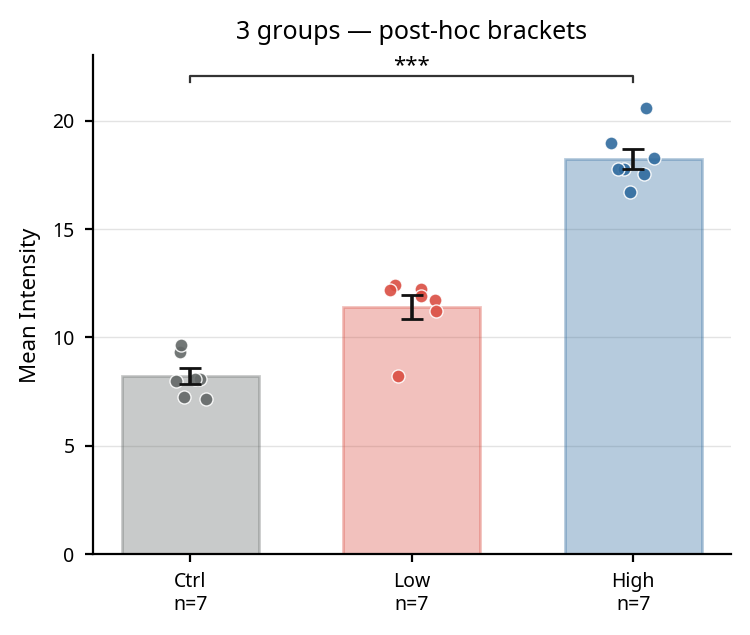
3 groupsOmnibus + multiplicity-corrected post-hoc brackets
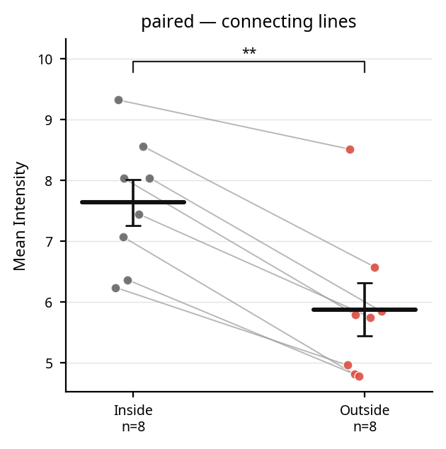
paired=TrueWithin-subject connecting lines
Filled ● (positive) / open ○ (negative) circles per factor beneath the bars — replaces long compound tick labels. Reusable across plots.
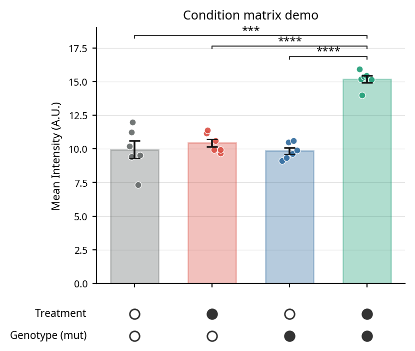
plot_group_distributionTreatment / Genotype condition table (columns = bars)
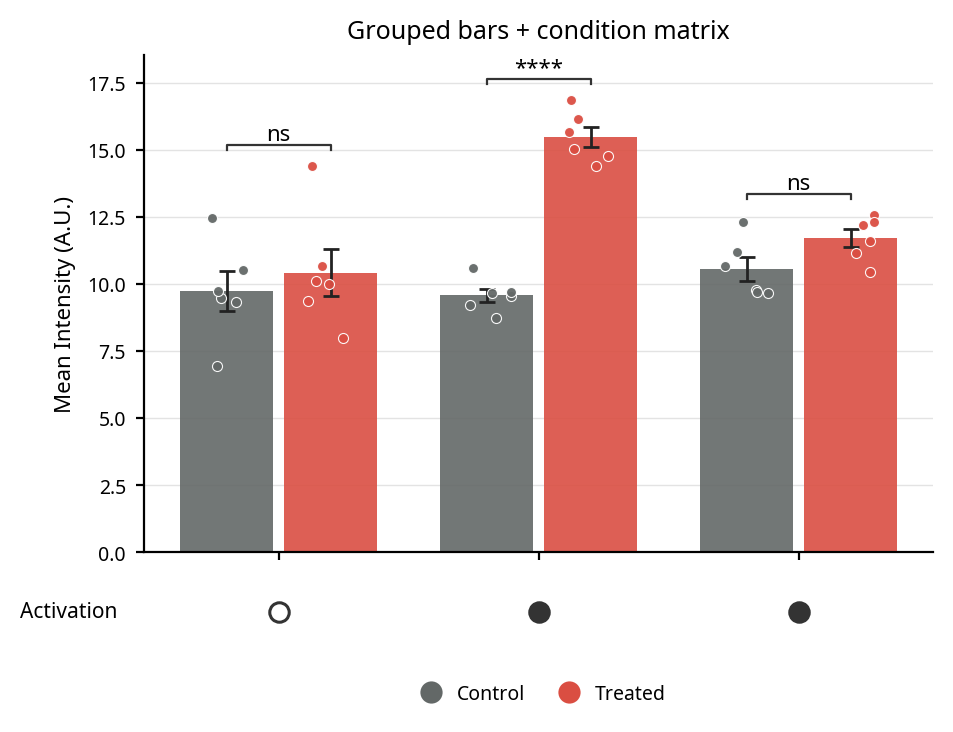
plot_grouped_barsGrouped bars + condition table (Activation) + circle legend + per-condition significance
Group mean ± SEM band over individual traces.
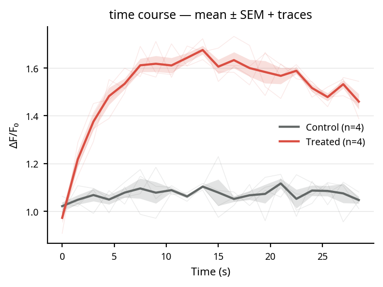
interval="sem"Mean ± SEM band + individual traces
Grouped colour + regression line + r / p.
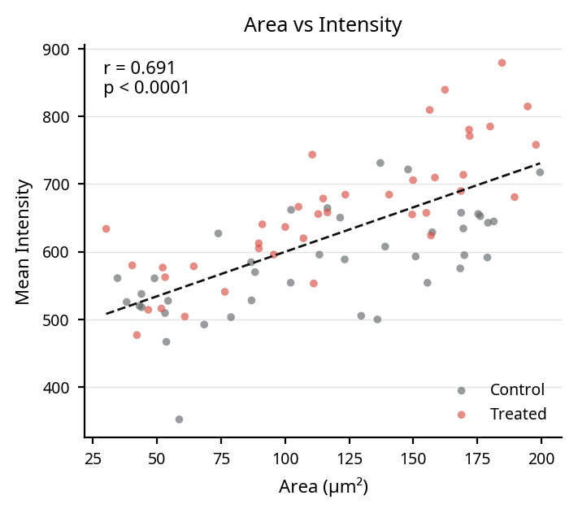
fit_line=TrueScatter + regression line
Cell × time ΔF/F₀.
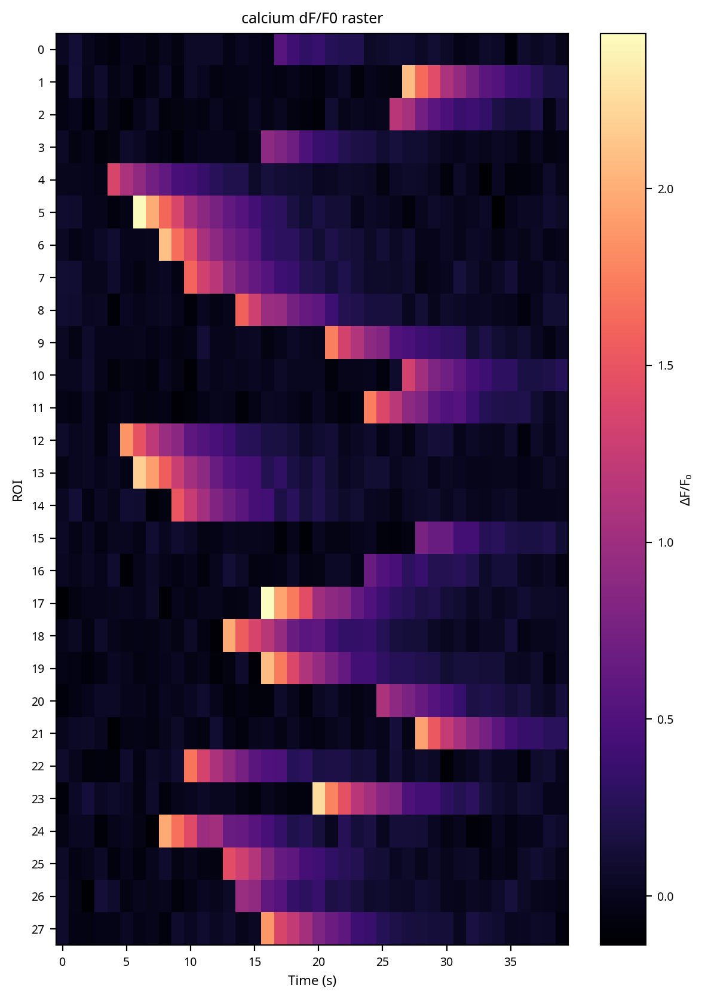
value_col="dff"ΔF/F₀ raster heatmap